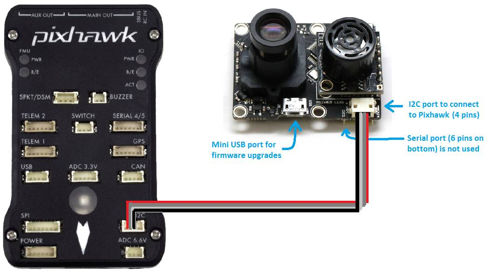

What is Optical Flow?
An optical flow sensor uses a downward-facing camera to estimate the drone’s
movement relative to the ground. It allows the drone to hold position without GPS.
How Optical Flow Works
The sensor captures images of the ground and tracks how features move
between frames. By measuring this movement, the flight controller can
calculate the drone’s velocity and position relative to the surface.
Key Parameters
- Operating height: Usually effective up to 3–5 meters
- Lighting conditions: Needs visible ground features
- Surface texture: Works best on textured surfaces
Typical Use Cases
- Indoor drone flight
- GPS-denied environments
- Precision hovering
- Warehouse inspection drones
Selection Tips
- Choose sensors with integrated distance sensors for better accuracy
- Ensure good lighting for proper operation
- Mount the sensor facing straight downward
Common Mistakes
- Flying over reflective or uniform surfaces
- Using optical flow at high altitude
- Operating in poor lighting conditions